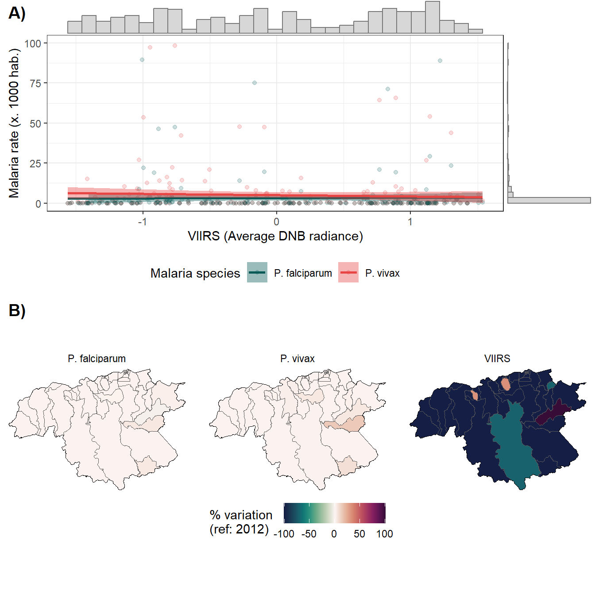

Code
library(tidyverse)
library(INLA)
library(udunits2)
library(sf)
library(spdep)
library(tictoc)
library(readr)
library(plm)
library(Metrics)
library(lme4)
library(yardstick)
library(gt)
source("nl_functions.R")library(tidyverse)
library(INLA)
library(udunits2)
library(sf)
library(spdep)
library(tictoc)
library(readr)
library(plm)
library(Metrics)
library(lme4)
library(yardstick)
library(gt)
source("nl_functions.R")# db.venec.est <- st_read("venezuela-estados.gpkg")
# db.venec.ps <- st_read("venezuela-pais.gpkg")
db.vec <- readRDS("db_venec_modelo.rds") %>%
mutate(population = pop) %>%
mutate(ID = ID -212) %>%
ungroup() %>%
group_by(ADM2_ES) %>%
mutate(ID_MUNI = group_indices()) %>%
ungroup()
#write.csv(db.vec,"db_vec.csv")
vene.shp <- readRDS("db_shp_modelo.rds") %>%
mutate(ID = ID -212)
db.vec.shp <- db.vec %>%
inner_join(vene.shp %>% select(ID),c("ID"="ID"))
vene_adj <- poly2nb(vene.shp)
# Spatial weights
W.vene <- nb2mat(vene_adj, style = "W")inla.batch.spec <- function(formula, dat1 = db.vec) {
model = inla(formula, data=dat1, family="nbinomial",
offset=log(population), verbose = F,
#control.inla=list(strategy="gaussian"),
control.inla=list(strategy="adaptive"),
control.compute=list(config=F, dic=T, cpo=T, waic=T,
return.marginals = FALSE),
control.fixed = list(correlation.matrix=T),
control.predictor=list(link=1,compute=TRUE)
)
model <- inla.rerun(model)
return(model)
}
inla.batch.spec.full <- function(formula, dat1 = db.vec) {
model = inla(formula, data=dat1, family="nbinomial",
offset=log(population), verbose = F,
#control.inla=list(strategy="gaussian"),
control.inla=list(strategy="adaptive"),
control.compute=list(config=F, dic=T, cpo=T, waic=T,
return.marginals.predictor = TRUE),
control.fixed = list(correlation.matrix=T),
control.predictor=list(compute=TRUE,link=1)
)
model <- inla.rerun(model)
return(model)
}
scale.den <- function(x){
(x - mean(x, na.rm=TRUE)) / sd(x, na.rm=TRUE)
}#install.packages("ggExtra")
library(ggExtra)
library(pals)
d_v_yy <- db.vec.shp %>%
ungroup() %>%
group_by(Year, ADM2_ES, ADM3_ES) %>%
summarise(PV = sum(PV, na.rm = T),
PF = sum(PF, na.rm = T),
pop = sum(pop, na.rm = T),
viirs = mean(viirs, na.rm = T),
r.pv = PV/pop,
r.pf = PF/pop,
mei = mean(mei)) %>%
ungroup()
smooth.plot <- d_v_yy %>%
mutate(r.pv=r.pv*1000,
r.pf=r.pf*1000) %>%
dplyr::select(r.pv, r.pf,ADM2_ES, viirs) %>%
gather(type, rate, r.pv:r.pf) %>%
bi_plot(trans_x = F,limits_y=c(0,100))
#bs
var.data <- d_v_yy %>%
ungroup() %>%
group_by(ADM2_ES, ADM3_ES) %>%
summarise(viirs_init = first(viirs)+1,
viirs_last = last(viirs)+1,
pv_init = first(r.pv)+1, pv_last = last(r.pv)+1,
pf_init = first(r.pf)+1, pf_last = last(r.pf)+1,
mei_init = first(mei)+1, mei_last = last(mei)+1) %>%
ungroup() %>%
mutate(viirs_last = ifelse(viirs_last<0,0,viirs_last),
delta_viirs = 100*((viirs_last/viirs_init)-1),
delta_viirs2 = 100*((viirs_init/viirs_last)-1),
delta_pv = 100*((pv_init/pv_last)-1),
delta_pv2 = 100*((pv_last/pv_init)-1),
delta_pf = 100*((pf_init/pf_last)-1),
delta_pf2 = 100*((pf_last/pf_init)-1),
delta_mei = 100*((mei_init/mei_last)-1),
cod = paste0(ADM2_ES, "-", ADM3_ES),
id = as.numeric(as.factor(cod))) %>%
# censura
mutate(delta_viirs = ifelse(delta_viirs>100,100,delta_viirs),
delta_viirs = ifelse(delta_viirs<(100*-1),-100,delta_viirs)
)
#area.bs
vene.vars <- vene.shp %>%
inner_join(var.data, by=c("municipio"="ADM2_ES", "parroquia"="ADM3_ES")) %>%
mutate(delta_viirs_c = ntile(delta_viirs, 5),
delta_pv_c = ntile(delta_pv, 5),
delta_pf_c = ntile(delta_pf, 5),
delta_mei_c = ntile(delta_mei, 5))
aa <- vene.vars %>%
mutate(x = 1) %>%
group_by(x) %>%
summarise(x = mean(x))
limit <- c(-101, 101)
vars.plot <- vene.vars %>%
select(delta_viirs, delta_pv2, delta_pf2) %>%
gather(key = var, value = val, delta_viirs:delta_pf2) %>%
ggplot() +
geom_sf(aes(fill=val), size = 0.1) +
geom_sf(data = aa, fill = NA, color = "black", size = 100 ) +
scale_fill_gradientn(colours=ocean.curl(200), guide = "colourbar",
limit = limit) +
theme_void() +
facet_wrap(.~var, nrow = 1,
labeller = as_labeller(c(`delta_pf2` = "P. falciparum",
`delta_pv2` = "P. vivax",
`delta_viirs` = "VIIRS"))
) +
labs(fill = "% variation \n(ref: 2012)") +
theme(legend.position = "bottom")
library(cowplot)
full.plot <- plot_grid(smooth.plot, vars.plot, ncol = 1, labels = c("A)", "B)"))
full.plot
library(reactable)
reactable::reactable(var.data %>% select(id,ADM2_ES,ADM3_ES,delta_viirs, delta_pv2, delta_pf2),
columns = list(
delta_viirs = colDef(format = colFormat(digits = 2)),
delta_pv2 = colDef(format = colFormat(digits = 2)),
delta_pf2 = colDef(format = colFormat(digits = 2))
),
searchable = TRUE,
striped = TRUE,
highlight = TRUE,
bordered = TRUE,
theme = reactableTheme(
borderColor = "#dfe2e5",
stripedColor = "#f6f8fa",
highlightColor = "#f0f5f9",
cellPadding = "8px 12px",
style = list(
fontFamily = "-apple-system, BlinkMacSystemFont, Segoe UI, Helvetica, Arial, sans-serif"
),
searchInputStyle = list(width = "100%")
)
)library(fixest)
# reghdfe rpv viirs tmmx pr if year>2013, abs( adm3_es year ) cl( adm2_es )
model.fixest.pv.old <- feols(r.pv ~ 1 + viirs + tmmx + pr | ID + Year,
cluster = db.vec$ID_MUNI ,data = db.vec)
model.fixest.pv.new <- feols(PV ~ viirs + tmmx + pr + offset(pop) | ID + Year,
cluster = db.vec$ID_MUNI ,data = db.vec)
# notas : r.pv y pv + offset no tiene sentido la comparacion en metricas de error
# r.pv no converge en INLA
# Por los dos motivos anteriores se modela pv + offset en entorno stata y Rlibrary(fixest)
#reghdfe rpf viirs tmmx pr if year>2013, abs( adm3_es year ) cl( adm2_es )
model.fixest.pf.old <- feols(r.pf ~ 1 + viirs + tmmx + pr | ID + Year,
cluster = db.vec$ID_MUNI ,data = db.vec)
model.fixest.pf.new <- feols(PF ~ viirs + tmmx + pr + offset(pop) | ID + Year,
cluster = db.vec$ID_MUNI ,data = db.vec)#mejor modelo
formula_vector_vec_vx.26 = PV ~ f(Year,model="rw1", replicate = ID,
cyclic = TRUE,
constr = TRUE) +
f(inla.group(pr),model="rw1") +
f(inla.group(tmmx),model="rw1") +
f(ID,model="bym2",graph=W.vene) +
viirs
# formula_vector_vec_vx.26 = r.pv ~ f(Year,model="rw1", replicate = ID,
# cyclic = TRUE,
# constr = TRUE) +
# f(inla.group(pr_std),model="rw1") +
# f(inla.group(temp_std),model="rw1") +
# f(ID,model="bym2",graph=W.vene) +
# viirs
# Modelo ajustado con offset = population
model.spec.vx.26 <- inla.batch.spec(formula_vector_vec_vx.26,dat1=db.vec)formula_vector_vec_fc.26 = PF ~ f(Year,model="rw1", replicate = ID,
cyclic = TRUE,
constr = TRUE) +
f(inla.group(pr),model="rw1") +
f(inla.group(tmmx),model="rw1") +
f(ID,model="bym2",graph=W.vene) +
viirs
# Modelo ajustado con offset = population
model.spec.fc.26 <- inla.batch.spec(formula_vector_vec_fc.26,dat1=db.vec)Se busco un paquete en R que reprodujera de mejor forma los resultados de STATA
Las tablas son sobre los efectos fijos de las ecuaciones calculadas
Dadas las unidades estandarizadas de las variables climaticas, se requiere las variables en sus unidades originales para por ejm graficar estos efectos
clear
insheet using "db_vec.csv"
* Regresiones originales (sin filtro por año )
reghdfe rpv viirs tmmx pr , abs( adm3_es year ) cl( adm2_es )
. reghdfe rpv viirs tmmx pr , abs( adm3_es year ) cl( adm2_es )
(MWFE estimator converged in 2 iterations)
HDFE Linear regression Number of obs = 225
Absorbing 2 HDFE groups F( 3, 10) = 2.27
Statistics robust to heteroskedasticity Prob > F = 0.1424
R-squared = 0.8682
Adj R-squared = 0.8304
Within R-sq. = 0.0165
Number of clusters (adm2_es) = 11 Root MSE = 0.0129
(Std. Err. adjusted for 11 clusters in adm2_es)
------------------------------------------------------------------------------
| Robust
rpv | Coef. Std. Err. t P>|t| [95% Conf. Interval]
-------------+----------------------------------------------------------------
viirs | .0023415 .0012405 1.89 0.088 -.0004225 .0051054
tmmx | -.0042265 .0018886 -2.24 0.049 -.0084344 -.0000185
pr | -.0022556 .0012967 -1.74 0.113 -.0051447 .0006335
_cons | .0090467 .0011892 7.61 0.000 .0063971 .0116964
* Regresiones originales (sin filtro por año )
reghdfe rpf viirs tmmx pr , abs( adm3_es year ) cl( adm2_es )
reghdfe rpf viirs tmmx pr , abs( adm3_es year ) cl( adm2_es )
(MWFE estimator converged in 2 iterations)
HDFE Linear regression Number of obs = 225
Absorbing 2 HDFE groups F( 3, 10) = 5.91
Statistics robust to heteroskedasticity Prob > F = 0.0138
R-squared = 0.8925
Adj R-squared = 0.8617
Within R-sq. = 0.0076
Number of clusters (adm2_es) = 11 Root MSE = 0.0045
(Std. Err. adjusted for 11 clusters in adm2_es)
------------------------------------------------------------------------------
| Robust
rpf | Coef. Std. Err. t P>|t| [95% Conf. Interval]
-------------+----------------------------------------------------------------
viirs | .0005085 .0004228 1.20 0.257 -.0004335 .0014505
tmmx | -.0010063 .0002945 -3.42 0.007 -.0016625 -.0003502
pr | .0001648 .0006172 0.27 0.795 -.0012104 .00154
_cons | .003212 .0003516 9.14 0.000 .0024286 .0039954
------------------------------------------------------------------------------library(sjPlot)
library(sjmisc)
tab_model(model.fixest.pv.old ,digits = 3)| r.pv | |||
|---|---|---|---|
| Predictors | Estimates | CI | p |
| viirs | 0.002 | -0.000 – 0.005 | 0.061 |
| tmmx | -0.004 | -0.008 – -0.000 | 0.031 |
| pr | -0.002 | -0.005 – 0.000 | 0.081 |
| Observations | 225 | ||
| R2 / R2 adjusted | 0.915 / 0.889 | ||
#tab_model(model.fixest.pv, p.style = "stars")library(sjPlot)
library(sjmisc)
tab_model(model.fixest.pf.old ,digits = 3)| r.pf | |||
|---|---|---|---|
| Predictors | Estimates | CI | p |
| viirs | 0.001 | -0.000 – 0.001 | 0.209 |
| tmmx | -0.001 | -0.002 – -0.000 | 0.003 |
| pr | 0.000 | -0.001 – 0.001 | 0.772 |
| Observations | 225 | ||
| R2 / R2 adjusted | 0.919 / 0.896 | ||
model.spec.vx.26$summary.fixed %>%
filter(row_number()==2) %>%
mutate(estimate=round(mean,3),
predictor="viirs",
low_int =round(`0.025quant`,3),
upp_int =round(`0.975quant`,3)
) %>%
mutate(CI = paste(low_int,"-",upp_int)) %>%
select(predictor,estimate,CI) %>%
gt() %>%
cols_align(
align = "center",
columns = everything()
)| predictor | estimate | CI |
|---|---|---|
| viirs | 0.053 | -0.276 - 0.315 |
model.spec.fc.26$summary.fixed %>%
filter(row_number()==2) %>%
mutate(estimate=round(mean,3),
predictor="viirs",
low_int =round(`0.025quant`,3),
upp_int =round(`0.975quant`,3)
) %>%
mutate(CI = paste(low_int,"-",upp_int)) %>%
select(predictor,estimate,CI) %>%
gt() %>%
cols_align(
align = "center",
columns = everything()
)| predictor | estimate | CI |
|---|---|---|
| viirs | 0.227 | -0.002 - 0.457 |
library(sjPlot)
library(sjmisc)
tab_model(model.fixest.pv.new ,digits = 3)| PV | |||
|---|---|---|---|
| Predictors | Estimates | CI | p |
| viirs | 47644.089 | 13203.314 – 82084.865 | 0.012 |
| tmmx | -29474.400 | -54159.624 – -4789.175 | 0.024 |
| pr | -46224.248 | -108442.547 – 15994.052 | 0.129 |
| Observations | 225 | ||
| R2 / R2 adjusted | 0.989 / 0.986 | ||
#tab_model(model.fixest.pv, p.style = "stars")library(sjPlot)
library(sjmisc)
tab_model(model.fixest.pf.new ,digits = 3)| PF | |||
|---|---|---|---|
| Predictors | Estimates | CI | p |
| viirs | 47465.737 | 13176.359 – 81755.114 | 0.012 |
| tmmx | -29385.851 | -54084.960 – -4686.742 | 0.024 |
| pr | -46065.005 | -108232.962 – 16102.952 | 0.130 |
| Observations | 225 | ||
| R2 / R2 adjusted | 0.990 / 0.986 | ||
library(purrr)
db.error <- data.frame(PF = db.vec$PF,
fitted_spatio = model.spec.fc.26$summary.fitted.values$mean,
fitted_fe = predict(model.fixest.pf.new))
db.error.vx <- data.frame( PV = db.vec$PV,
fitted_spatio= model.spec.vx.26$summary.fitted.values$mean,
fitted_fe = predict(model.fixest.pv.new))
multi_metric <- metric_set(mase, rpd, huber_loss)
other_metrics_st <- db.error |>
multi_metric(PF,fitted_spatio)|>
pluck(".estimate")
other_metrics_fe <- db.error |>
multi_metric(PF,fitted_fe)|>
pluck(".estimate")
other_metrics_st_vx <- db.error.vx |>
multi_metric(PV,fitted_spatio)|>
pluck(".estimate")
other_metrics_fe_vx <- db.error.vx |>
multi_metric(PV,fitted_fe)|>
pluck(".estimate")
data.error <-data.frame(Especie =c("Falciparum"),
Error_metric =c("MDAE","MAE","RMSE","MASE","RPD","HUBER LOSS"),
falci_error_st =c(Metrics::mdae(db.vec$PF,model.spec.fc.26$summary.fitted.values$mean),
Metrics::mae(db.vec$PF,model.spec.fc.26$summary.fitted.values$mean),
Metrics::rmse(db.vec$PF,model.spec.fc.26$summary.fitted.values$mean),
other_metrics_st
),
falci_error_fe =c(Metrics::mdae(db.vec$PF, predict(model.fixest.pf.new)),
Metrics::mae(db.vec$PF, predict(model.fixest.pf.new)),
Metrics::rmse(db.vec$PF, predict(model.fixest.pf.new)),
other_metrics_fe
)
) %>%
mutate(
falci_error_st = round(falci_error_st,2),
falci_error_fe = round(falci_error_fe,2)
)
data.error.vx <-data.frame(Especie =c("Vivax"),
Error_metric =c("MDAE","MAE","RMSE","MASE","RPD","HUBER LOSS"),
vivax_error_st =c(Metrics::mdae(db.vec$PV,model.spec.vx.26$summary.fitted.values$mean),
Metrics::mae(db.vec$PV,model.spec.vx.26$summary.fitted.values$mean),
Metrics::rmse(db.vec$PV,model.spec.vx.26$summary.fitted.values$mean),
other_metrics_st
),
vivax_error_fe =c(Metrics::mdae(db.vec$PV, predict(model.fixest.pv.new)),
Metrics::mae(db.vec$PV, predict(model.fixest.pv.new)),
Metrics::rmse(db.vec$PV, predict(model.fixest.pv.new)),
other_metrics_fe
)
) %>%
mutate(
vivax_error_st = round(vivax_error_st,2),
vivax_error_fe = round(vivax_error_fe,2)
)
full.data.error <- cbind(data.error %>% select(-Especie),
data.error.vx %>% select(-Especie,-Error_metric) )
# options(scipen=999)
#
# library(gt)
# library(gtExtras)
# data.error %>%
# gt::gt() %>%
# tab_header(
# title = md("**Error de prediccion**"),
# subtitle = "Falciparum"
# ) %>%
# cols_label(error_st = "Error (Espacio Temporal)",
# error_fe = "Error (FE)") %>%
# gt_theme_nytimes()
#
# # gt_set_col_headers(c("Error (Spacio - Temporal)", "Error (FE)"))
#
#
#
#
# library(gt)
# library(gtExtras)
# data.error.vx %>%
# gt::gt() %>%
# tab_header(
# title = md("**Error de prediccion**"),
# subtitle = "Vivax"
# ) %>%
# cols_label(error_st = "Error (Espacio Temporal)",
# error_fe = "Error (FE)") %>%
# gt_theme_nytimes()
full.data.error %>%
gt::gt() %>%
tab_spanner(
label = "Falciparum",
columns = c(2,3)
) %>%
tab_spanner(
label = "Vivax",
columns = c(4,5)
)%>%
cols_label(falci_error_st = "Error (Espacio Temporal)",
falci_error_fe = "Error (FE)",
vivax_error_st = "Error (Espacio Temporal)",
vivax_error_fe = "Error (FE)",
Error_metric = "Metrica"
) %>%
tab_header(
title = md("**Error de prediccion**"),
subtitle = "por especie"
)|>
cols_align(
align = "center",
columns = c(falci_error_st,falci_error_fe,vivax_error_st,vivax_error_fe,Error_metric)
)| Error de prediccion | ||||
| por especie | ||||
| Metrica | Falciparum | Vivax | ||
|---|---|---|---|---|
| Error (Espacio Temporal) | Error (FE) | Error (Espacio Temporal) | Error (FE) | |
| MDAE | 1.75 | 24059.55 | 8.55 | 24369.29 |
| MAE | 396.36 | 33437.52 | 1402.48 | 33497.83 |
| RMSE | 2591.01 | 48358.59 | 7962.19 | 48470.87 |
| MASE | 1.23 | 104.10 | 1.23 | 104.10 |
| RPD | 0.55 | 0.03 | 0.55 | 0.03 |
| HUBER LOSS | 395.99 | 33437.02 | 395.99 | 33437.02 |